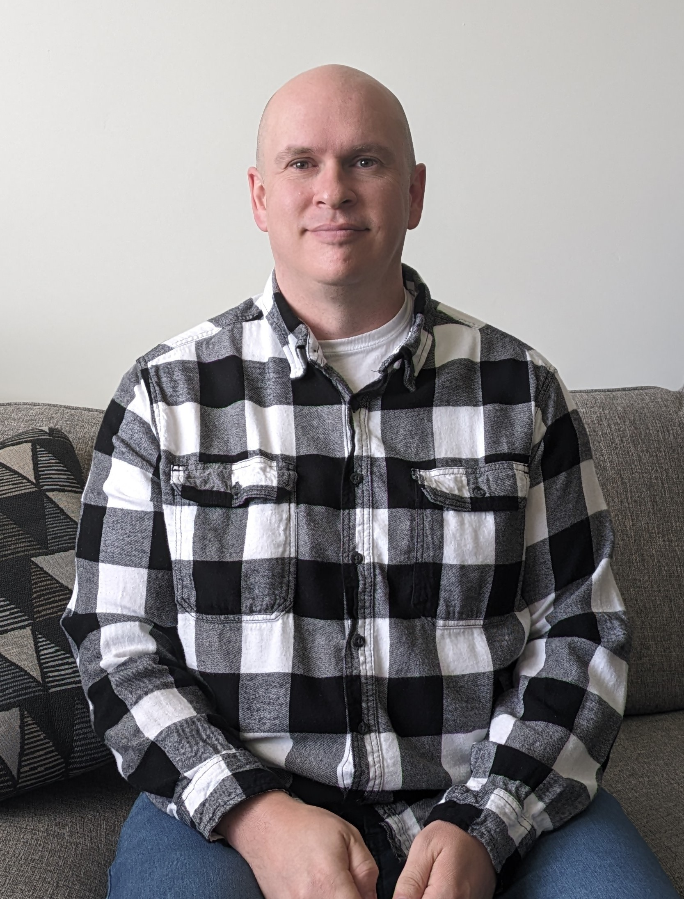

software, audio, create
Passionate about crafting elegant solutions to complex problems, building scalable applications, and turning innovative ideas into reality through clean, efficient code.
Website powered by BlissCode.dev